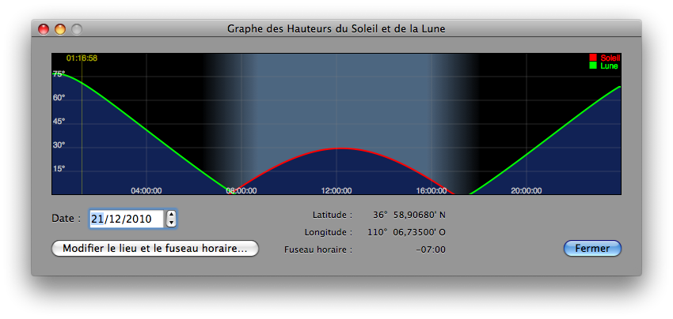

Fenêtre Graphe des Hauteurs du Soleil et de la Lune
Le graphe des hauteurs du Soleil et de la Lune sur vingt-quatre heures vous aidera à mieux visualiser les mécanismes de l’éclipse de Lune. Pour cela vous devez ouvrir la fenêtre Graphe des Hauteurs du Soleil et de la Lune depuis Lunar Eclipse Maestro.
-
Dans le menu Affichage sélectionnez Graphe des hauteurs du Soleil et de la Lune…

-
L’alternance du jour et de la nuit est clairement visible ainsi que la position du maximum de l’éclipse si celui-ci est visible. Les données sont affichées en heure locale, il est donc très important de régler correctement le fuseau horaire.
-
Il est ensuite possible d’enregistrer l’image dans un fichier PNG à l’aide du menu contextuel disponible sur le graphe.
|